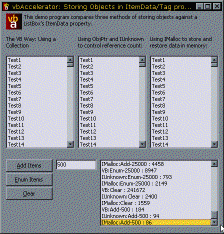

vbAccelerator Object Store Sample (25K)
vbAccelerator Object Store Sample (25K)
 15 Aug 1999
15 Aug 1999
First Posted
 IShellFolder Extended Type Library Version 1.2 (ISHF_Ex.Tlb)
IShellFolder Extended Type Library Version 1.2 (ISHF_Ex.Tlb)

Storing Objects Against ItemData and Tag properties
Build a Collection that runs 100 times faster than the VB version and enhance many controls with this code.
ListBox and Combo boxes have an ItemData property to allow you to store an additional long value against each ListItem. Similarly, ListView items and TreeView nodes have a Tag property which can be used to store a string. But what if you want to associate more data along with an item? Clearly you can make some use of a long value to store a key, or use the bitfield technique to store multiple items. With a string you can generate cunning schemes to store multiple strings and numbers in the same string. But it would be a lot nicer if you could just store an object against each item. Then data of any complexity can be stored against the item just by setting the item data to point to the instance of the object.
This article explores three methods you can use to store objects using only a long value to store the object, and hence you can associate the long value with either the ItemData property of a List or Combo box, or (by using CStr and CLng) with the Tag property of Microsoft control.
The uses don't stop there. You can replace VB's collection object with an object that runs up to 100x faster. You could attach custom class data to the items in an S-Grid control. Take advantage of the technique when building controls directly from the API to store lots of data in the lParam member of the items... this is great stuff!
Three Ways To Store Objects
Storing objects against ListBox items requires a pretty flexible way to allocate and remove the objects. You can add items to a ListBox, but you can also insert items at any position. Likewise you can delete items from any position. That really rules out using arrays as your storage method without a lot of pain, because whilst arrays are always the fastest way to work in VB if you add and remove to the end of the list, they are difficult to manage and slow if you want to insert or delete from the middle. (Although it is possible to do this; using either a Linked List type structure or using the exciting CopyMemory array hack elsewhere on the site!)
- Oh Dear: VB's Collection Object
At first glance VB's collection object would seem to provide a good solution to this problem. You can Add, Insert and Delete items in the collection at any point, and you can store an object against each item in the collection. Also you can give every item in the collection a unique key to identify it, and although this must be a string there is no problem using a Long value (which you can use to link the ListBox's ItemData to the item in the collection) as long as you ensure VB thinks it is a string when you add the item. The sample code uses a counter to generate unique keys, and hence is limited to only (ahem) adding and up to 4 billion items before it wraps and could then possibly generate a duplicate key. However note that that limit is equivalent to 100 days of continuous running doing nothing else except adding and removing objects in blocks of 100 (on my machine).
And basically this technique works... except for one thing: performance, at which point it blows goats. If the ListBox has a small number of items, everything is fine. But if the ListBox has thousands of items then this technique is unsuitable. I would recommend this technique for small numbers of items just because it is simple... except that there is actually an even simpler method in coding terms!
- Using IUnknown and ObjPtr
A COM object is fundamentally the same as a C++ object: a "reference" to an object is just a pointer to a structure in memory called the Virtual Table or vtable. In COM terms, however, there is a difference between just knowing the pointer to the vtable and having a workable object. This difference is enforced by the COM contract and implemented through the IUnknown interface. All COM objects must support this interface and all must work according to the contract in order to work successfully.
The IUnknown object has just three methods:
- AddRef
- Release
- QueryInterface
The QueryInterface is the method COM and Automation can use to determine which facilities the object supports, and provides a directory to those objects. The interesting methods (at least for the purposes of this article) are the AddRef and Release methods.
All COM objects use an AddRef and Release scheme to determine when they are being used. Whenever a COM object is created, or a program obtains a reference to the object, the AddRef method of the object is called. Whenever a reference to an object is set to nothing (including when it goes out of scope), the Release method is called. The COM object is in charge of internally counting the number of AddRef and Release calls, and when its internal counter of references reaches 0 it terminates, freeing up any memory allocated to the object.
Since all VB objects implement the COM contract, we can take advantage of the IUnknown interface to create valid COM references to objects but without using the VB Object type or the native object type itself. It's easy! We just do what any COM-conversant object must do to store an object, i.e. keep a copy of the pointer to the object but also call the IUnknown AddRef method.
This technique would be fine, but unfortunately VB does not allow you to call either AddRef or Release. You can create an object reference of type IUnknown, but any attempt to call the methods results in an unfriendly error message:
"Function or interface marked as restricted, or the function uses an Automation type not supported in VB"
(Incidentally, if you try to include a public method called Release in a VB5 UserControl, something even worse happens! Try compiling one and see if you can interpret that error message...) The only way to work around this is to use a version of IUnknown that you can call yourself; and that means using a Type Library. For this sample I have used Brad Martinez's IShellFolder Extended Type Library v1.2 (ISHF_Ex.TLB) (see the Type Library section for download details) to get at IUnknown; you can also find implementations in a number of other Type Libraries, including Bruce McKinney's Win.TLB and WinU.TLB provided with "Hardcore Visual Basic".
Once you have a reference to the Type Library you can then safely store classes using just their object pointer, like this:
Private Declare Sub CopyMemory Lib "kernel32" Alias "RtlMoveMemory" ( _ lpvDest As Any, lpvSource As Any, ByVal cbCopy As Long) ' To Store An Object to a Long: Public Sub Store(objThis As Object) As Long Dim iU As IShellFolderEx_TLB.IUnknown Set iU = objThis iU.AddRef Set iU = Nothing Store = ObjPtr(objThis) ' objThis cannot terminate until we call iU.Release on it End Sub ' To Retrieve the Object From the Long Value: Private Property Get ObjectFromPtr(ByVal lPtr As Long) As Object Dim objT As Object ' Bruce McKinney's code for getting an Object from the ' object pointer: CopyMemory objT, lPtr, 4 Set ObjectFromPtr = objT CopyMemory objT, 0&, 4 End Property ' To Delete The Object: Public Sub Delete(ByVal lPtr As Long) As Long Dim objThis As Object Set objThis = ObjectFromPtr(lPtr) Dim iU As IShellFolderEx_TLB.IUnknown Set iU = objThis iU.Release Set iU = Nothing Set objThis = Nothing ' objThis now terminates if there are no other external ' references to it. End Sub - Using IMalloc
The last method took advantage of COM support in VB objects to create an "object" which lasts as long as the pointer to it does. Another way to create an object that lasts is through Persistence.
In the persistence scheme, the object is coded so it is capable of storing all the information required to create a completely new object that looks the same as the one you started with. The persistent information can be stored in a format external to the object itself, hence allowing a new version of the object to be stored at a later date by creating a new object and loading the external data in. The most obvious example of a persistent object in VB is the UserControl object, which includes a PropertyBag implementation to allow details about the UserControl to be stored and restored to the control's parent .FRM and .FRX files.
The only question about persistance is how to store the data. You can see some sample techniques for persisting information in the article "malloc in VB?" which demonstrates saving byte arrays, UDTs and strings. Storing longs, bytes and integers is simple, and it is straightforward to aggregate these techniques together. When I say straightforward, however, I should point out that another way of putting this is tedious and error prone. You can do it, but it isn't easy.
A better way of persisting data is to have a class which controls reading and writing data to a single memory chunk and have that provide a memory pointer for saving purposes. The VB PropertyBag object is an example of such an object - this can save properties in many different data types to a byte array in memory (which is extremely simple to persist to memory or file). Unfortunately, this object is only exposed in VB6 and then it is only available to public classes. A better method would be a PropertyBag which was available regardless of type and VB version (Hey!!! If any VB designers are reading, please mail me and tell me how come something I can do with only a little trouble is not possible in VB?). An example of this type of object at the site is the "XML Property Bag" object, which can be implemented by any class you choose and is adept at turning complex combinations of variables into a neat package. (Not just that; it has the by default benefit of delivering XML, the ideal way of sending your data to another machine or process...)
Performance Comparison
The following table shows the results from running the sample application provided with the download for differing numbers of items. All the tests were performed on a aged 266MHz Pentium II desktop with 256Mb RAM. Below 500 items the performance differences are insignificant - you can use any technique you want. However, as the number of items increases we begin to see that the VB Collection object is useless, and performance worsens exponentially. Both the IUnknown and the IMalloc schemes however provide almost equal high performance which varies much more linearly to the number of items. The IMalloc method is quickest at adding and removing items, whilst the IUnknown method is quickest for accessing items:
| Collection | IUnknown | IMalloc | ||||||||||
| Add | Enum | Clear | Total | Add | Enum | Clear | Total | Add | Enum | Clear | Total | |
| 100 | 54 | 7 | 9 | 70 | 41 | 1 | 10 | 52 | 25 | 34 | 9 | 68 |
| 500 | 190 | 39 | 72 | 301 | 110 | 8 | 52 | 170 | 84 | 41 | 30 | 155 |
| 1000 | 383 | 91 | 224 | 698 | 201 | 15 | 94 | 310 | 157 | 83 | 69 | 309 |
| 5 000 | 2 184 | 490 | 4 510 | 7 184 | 1 008 | 73 | 436 | 1 517 | 843 | 464 | 298 | 1 605 |
| 10 000 | 4 423 | 1 068 | 28 531 | 34 022 | 1 963 | 168 | 857 | 2 988 | 1 642 | 935 | 502 | 3 079 |
| 25 000 | 12 352 | 8 947 | 241 672 | 262 971 | 5 601 | 793 | 2 400 | 8 794 | 4 458 | 2 149 | 1 559 | 8 166 |
The IUnknown reference count control method has to be highly recommended. You get very quick access to the objects you have created with hardly any new code to write.